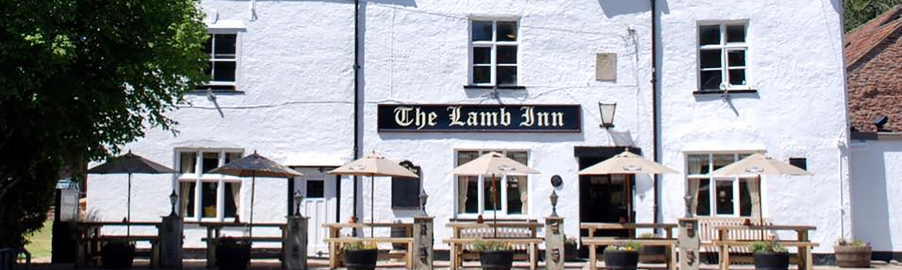

Acton Aid was formed in 1973, when a small group of men from Iron Acton decided to set up an informal organisation to organise events for the benefit of local residents, with surplus funds going to help good causes in the local community. They also offered their services free of charge to projects that would enhance village life.
Little has changed in that time, other than Acton Aid now has over 40 members, the organised events have become larger with a very loyal following and have become part of the village calendar. These events allow us to generate significant funds for good causes and charities.
Today Acton Aid's mission continues to be:
“Raising money for the support of our local good causes”
Welcome! Iron Acton is a sociable little village with a thriving local community and Acton Aid is a group of neighbours and friends who volunteer our time for the benefit of the Parish of Iron Acton. Our aim is to enrich the lives of the residents and visitors with events and festivities, to maintain and enhance the local environment and provide a support line to those in times of need.
A key part of what we do, and how we are best known, is by staging a programme of events throughout the year. These start with our support for the May Day celebrations on the Village Green, the now famous Music in the Meadow event in midsummer, and the Beer Festival and bonfire fireworks display in the autumn and winter. We also work closely with other Parish organisations for other events and celebrations throughout the year.
This past year and extending into 2021, world events have prohibited us from hosting any organised activities. However, Acton Aid responded to the outbreak of COVID-19 and the subsequent restrictions by launching a village helpline that provided support for those unable to leave their homes by providing shopping services, prescription collections and other duties. Last year, we finally completed a long-standing project to lay a footpath along a section of the Frome Valley Walkway from Algar’s Mill to Tubb’s Bottom, which has been very well received by everyone using the path, especially as a means to escape from lockdown imprisonment!
We are not a charitable foundation; we exist to host events for the community to enjoy and use them to raise funds which provide support to the parish in general and individuals in need, but we do make regular donations to charitable causes and organisations in Iron Acton and further afield. In addition, members and their families regularly volunteer their time and their skills to help maintain and improve the environment of the Parish and you will find out more on this website.
If you would like to know more about us and what we do or would like to confidentially alert us to someone in need within the Parish, please contact our Secretary, Ollie Taylor
Thank you for visiting,
Mike Sutton
Chairman, Acton Aid CIC
Acton Aid is a “Community Interest Company”. The chairman is elected annually and he chooses a charity of the year that the group will also support through bucket collections at events.
If you are a resident of Iron Acton or an organisation within the village and need assistance or help, please contact us on a confidential basis to discuss your needs.
Please send an email to the secretary with your contact details and a brief description of how Acton Aid may be able to help.